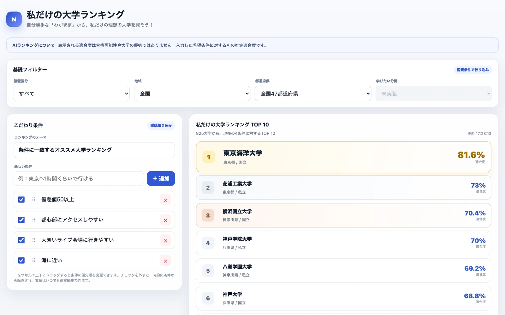
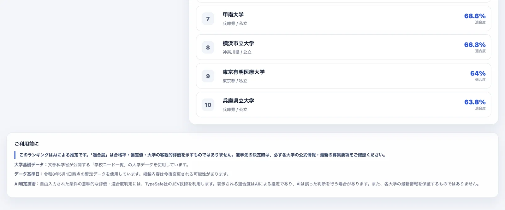

体験
絞り込みが2つに分かれている。設置区分や地域は「客観条件で絞り込み」、自由に書く条件は「曖昧絞り込み」と、ラベルで区別されている。どこからが推定なのかが、画面の構造で分かる。
- 条件は、消さずにチェックを外して一時的に除ける。1つの条件が順位にどう効いているかを、試して確かめられる。
- 並べ替えで優先順を変えられる、と画面は説明している。優先順が適合度にどう反映されるかは、確認していない。
- 注記が、結果の上と、ページの下の両方にある。「合格率・偏差値・大学の客観的評価を示すものではありません」「AIは誤った判断を行う場合があります」と、数値の意味を限定している。
- 未実装の項目を隠さず、「未実装」と表示している。
- 大学ごとに、どの条件がどれだけ合ったかの内訳は、掲載した画面には出ていない。81.6%の理由は、画面からはたどれない。
キャプチャ
{kind=link}

（原寸の画像を開く）{kind=link}

（原寸の画像を開く）見る箇所1枚目の「AIランキングについて」の注記、基礎フィルター、こだわり条件のチェック・並べ替え・削除、TOP 10と適合度、更新時刻。2枚目の「ご利用前に」と「AI判定技術」
入力から画面の変化まで
-
判断への入力
設置区分、地域、都道府県による絞り込みと、自由に書いた「こだわり条件」。掲載した画面の条件は「偏差値50以上」「都心部にアクセスしやすい」「大きいライブ会場に行きやすい」「海に近い」。条件は追加、削除、オンとオフ、並べ替えができる。
-
Jevの判断
サイトの説明は「自由入力された条件の意味的な評価・適合度判定には、TypeSafe社のJEV技術を利用します」。作者の投稿は、不適切な条件を弾く判断にもJevを使うと述べている。
-
結果がUIをどう変えるか
「825大学から、現在の4条件に対するTOP 10」と、大学ごとの適合度（掲載した画面の1位は81.6%）、更新時刻。
- 判断型の見立て
- Score推定
- サイトは自由入力の条件の意味的な評価と適合度判定にJEV技術を使うと明記するが、条件ごとの質問型と適合度への集約方法は公開されていない。
Jevとの適合
多数の候補を、利用者が書いた複数の条件に照らして評価し、並べる用途は、Jevの低遅延と並列性に合う。条件を変えるたびにランキングを作り直す操作は、判断が速いことを前提にしている。一方で、進学先の検討という重い判断に関わるため、適合度を事実として読ませない注記が欠かせない。
確認範囲と未確認事項
日本語の作者による投稿と公開サイトを確認。サイトは、適合度がAIによる推定であり、合格可能性や大学の客観的な評価ではないと明記している。ソースコードと、質問の設計は公開されていない。「学びたい分野」は未実装と表示されている。不適切な条件を弾く判断は、投稿で述べられているが、確かめていない。
- 確認済み公開サイトの画面（注記、基礎フィルター、条件の追加・削除・オンとオフ・並べ替えの説明、825大学を対象としたTOP 10と適合度、更新時刻、JEV技術の利用の明記、未実装の表示）、作者の投稿
- 未検証適合度の計算と、条件の優先順の反映、適合度の再現性と妥当性、不適切な条件を弾く判断の動作、質問の設計、ソースコード
- 推定扱い質問型（Scoreと見立て）。条件ごとの判断をアプリ側で適合度へ集約しているという読み方
- 引用公開サイト画面を2026-09-21に必要範囲で取得。権利は作者に帰属する